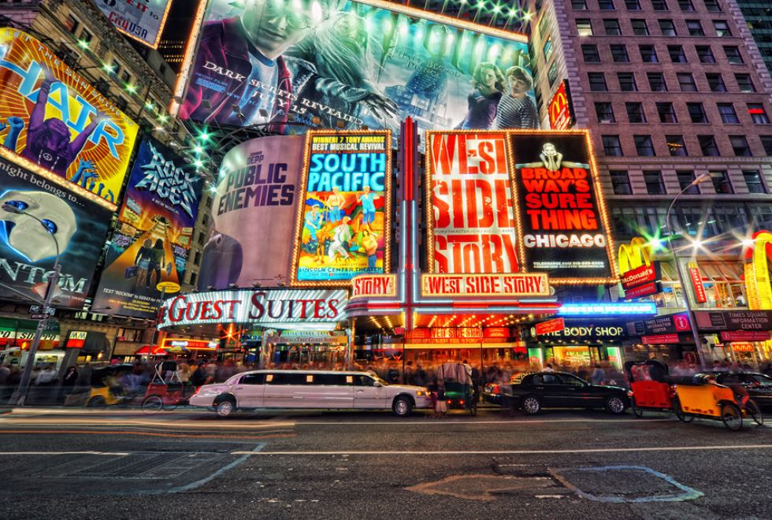
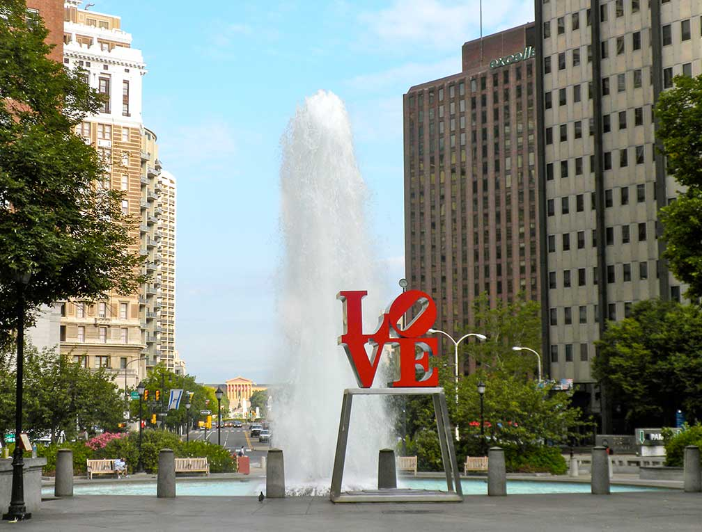
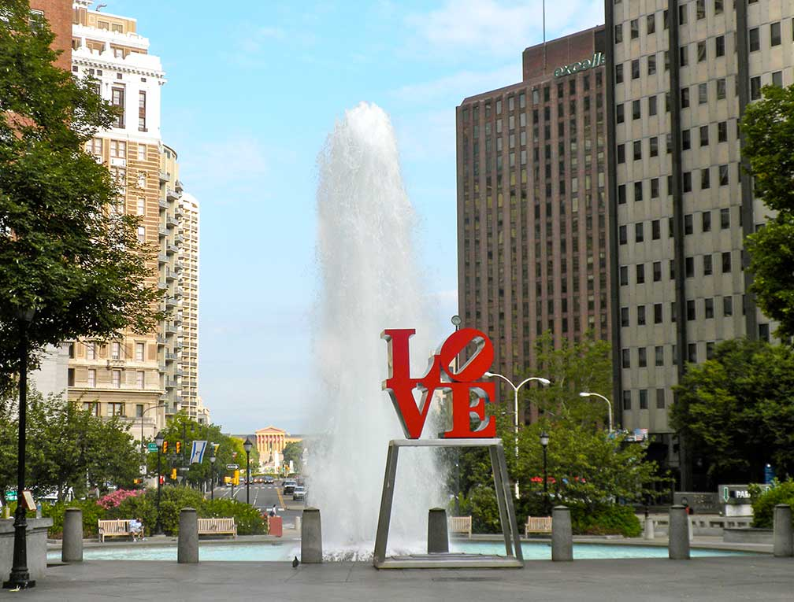

Amazing trip to New York

New York City - NYC, Also known as most populus city in the United States of America is our most popular travel destination on the east coast.NYC metro area is the largest in USA with over eight million residents.
Many american experience travelers usually reach following hot spots of new york city:Starting with avenue park, going trought central park after on wall street & brooklyn bridge and finishing up taking photos at the times square and chilling on the famous red stairs.Check some of our packets for your next amazing and unforgivable trip to the famous city of new york city! Safe travel.New York traces its roots back to 1624 when it was founded as a trading post by colonists of the Dutch Republic. It was named New Amsterdam in 1626. The city and its surroundings came under English control in 1664. New York served as the capital of the United States from 1785 until 1790. It has been the country's largest city since 1790.
Amazing trip to Philadelphia
 
Philadelphia - Home of the American independence,
Have you ever wonder about visiting the great Rocky stairs and rocky statue? Maybe taking photo in front of LOVE PHILLY sign? Checking Independence Hall and touching famous Liberty Bell? This is your great choice!Over the years we took many tours to Philadelphia. Many travellers enjoyed it to the fullest. Philadelphia also triggers emotion while walking trought the one of the oldest American Cities!This course gives the chance to see sites such as: Mount Moriah Cemetery, Eastern State Penitentiary, the Museum of the American Revolution, Washington’s Slave Quarters. These are only the beginning. Moreover, visiting sites throughout the city will allow for a discussion of the current controversies surrounding monuments—including monuments in Philadelphia. Overall, gain knowledge of how and why historical memories of places and people are made in the first place. Central to our discussions will be analysis of documentary and material and historical preservation